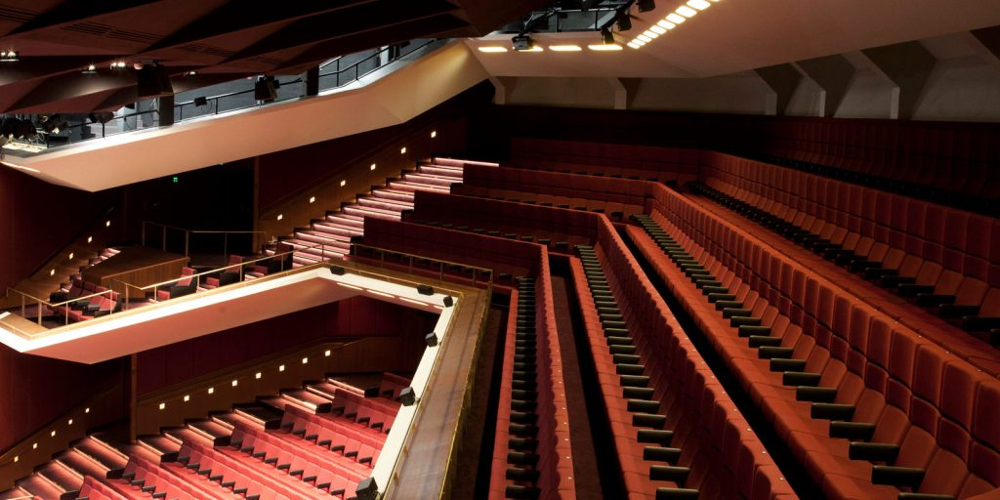
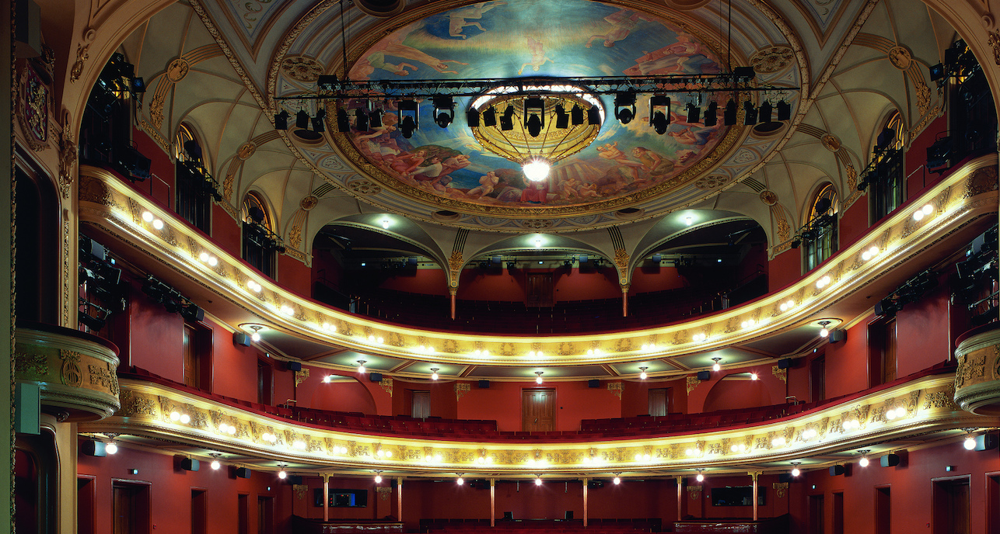

Teatterit
Helsingin kaupunginteatteri
"Helsingin Kaupunginteatteri (HKT) on Suomen suurin ja monipuolisin ammattiteatteri, joka haluaa tarjota yleisölle unohtumattomia elämyksiä ja merkityksellisiä tarinoita kaikilla viidellä näyttämöllään."
Katso täältä lisää!Suomen kansallisteatteri
"Kansallisteatteri on vuonna 1872 perustettu vanhin suomenkielinen teatteri. Kansallisteatteri on taiteellinen teatteri, jonka ohjelmistossa nähdään tuoreinta kotimaista draamaa, kiinnostavimpia ulkomaisia näytelmiä ja parhaita klassikoita."
Katso täältä lisää!Aleksanterin teatteri

"Aleksanterin teatterista löytyy monenlaisia tiloja niin suuria yritysseminaareja kuin vaikkapa pieniä häitä varten. Tilaa löytyy myös jumppareille ja tanssijoille sekä toimiston tarpeessa oleville. Yli 135-vuotiaan talon tilat ovat poikkeuksellisen kauniit ja taipuvat moneen, vaikka ikä toki hieman jäykistää."
Katso täältä lisää!Lilla teatern

"Näyttelijät Oskar ja Eja Tengström perustivat Lilla Teaternin vuonna 1940. Sen nimen teatterille sai sen ensimmäinen kotipaikka, pieni salonki, jossa oli vain 100 istuinpaikkaa Handelsgillet-talossa Kaserngatanilla Helsingissä."
Katso täältä lisää!Savoy

"Savoy-teatteri on kansainvälinen vierailuteatteri, joka sijaitsee Helsingin ydinkeskustassa Esplanadin puiston kupeessa."
Katso täältä lisää!Universum

"Universum on neljän helsinkiläisen teatterin – Aurinkoteatterin, Teater Marsin, Sirius Teaternin ja Teatteri Venuksen – yhteinen yhdistys. Se on yritys tehdä yhdessä sellaista mitä on vaikea tehdä yksin."
Katso täältä lisää!